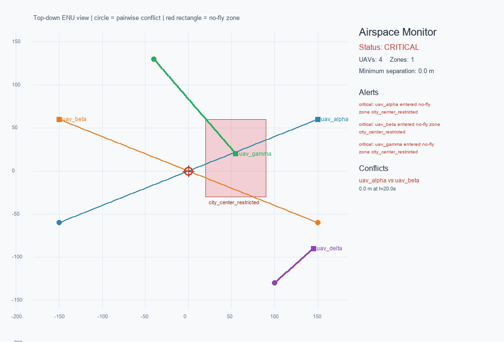

多无人机空域监测：多边形禁飞区与机间冲突
为什么需要这个模块
现有的 禁飞区检测 模块面向单个经纬度点， 用 Haversine 距离判断是否落入圆形区域。它适合“起点/终点是否安全”的快速检查， 但无法回答低空多机场景中的两个关键问题：
- 一架无人机沿整条航迹飞行时，是否会在某个时刻进入多边形禁飞区？
- 两架无人机的航迹是否会在未来短时间内发生危险接近？
本模块把输入扩展为多架无人机的 ENU 时间序列，输出电子围栏告警、两两最近接近 距离和冲突解脱建议。核心算法只依赖 NumPy，可以在没有 ROS 2、AirSim 或 GPU 的 机器上运行。
运行环境
- Python 3.10 及以上，
numpy、Pillow（requirements.txt）； - 实测环境：Windows 11
10.0.26200、Python3.12.14、NumPy2.3.5、Pillow12.3.0； - 离线演示不需要 ROS 2 / AirSim / Unreal / GPU；ROS 2 部分需 Ubuntu 22.04 + Humble。
快速运行
cd src/air/multi_uav_airspace_monitor
python -m pip install -r requirements.txt
python main.py demo
实际运行输出（results/ 是本地产物目录，不提交仓库）：
==> multi_uav_airspace_monitor
status=critical
uavs=4 zones=1
minimum_separation_m=0.0 (horizon 20.0 s)
alerts=3 conflicts=1
conflict uav_alpha vs uav_beta: 0.00 m at 20.00 s
critical: uav_alpha entered no-fly zone city_center_restricted
critical: uav_beta entered no-fly zone city_center_restricted
critical: uav_gamma entered no-fly zone city_center_restricted
screenshot: results/demo_screenshot.png
评估自己的场景（JSON 格式见模块 README）：
python main.py check --config scenario.json
check 在 status=critical 时返回 1，safe / warning 返回 0，场景读不到或
解析失败返回 2，便于直接接到脚本或 CI。demo 只要跑完就返回 0。

演示中有 4 架无人机：uav_alpha 与 uav_beta 在中心迎头交叉，
uav_gamma 进入 city_center_restricted 禁飞区，uav_delta 保持安全。
圆形标记表示机间最近接近点，红色多边形表示禁飞区。
方法
电子围栏
禁飞区由二维多边形和高度层 [floor_z, ceiling_z] 定义。对每个轨迹点：
- 先检查高度是否在层内；
- 再用射线法判断水平投影是否在多边形内部（落在边界上算进入）；
- 若不在内部，则计算到多边形边界的距离，小于
buffer_m时给出 warning。
机间冲突
对每一对无人机，先取两条轨迹的公共时间区间，再截取其中从公共起点开始的前
horizon_s 秒，在窗口内以固定步长插值，计算三维距离：
取窗口内的最小值作为最近接近距离。小于 critical_distance_m 为 critical，小于
warning_distance_m 为 warning。先截取、后取最小值是有意为之：如果窗口内已经进入
告警距离，而全程最小值出现在窗口之外，仍然要报出窗口内的这次接近，不能因为选中的
时刻超窗就把整对无人机跳过。当前实现是短时域 CPA 监测，不替代完整的 UTM 航路调度。
minimum_separation_m 与冲突检测用同一个时间窗，因此不会出现「status=safe
但最小间隔为 0」这种自相矛盾的输出；整段公共区间的最近距离单独记在
minimum_separation_full_m，两者差得多就说明更近的接近在时间窗之外。
状态取三级：任一 critical 告警或 critical 冲突为 critical；只有 warning 级告警/冲突
为 warning；其余为 safe。
输入与输出
输入是 JSON：zones 定义禁飞区，uavs 定义每架无人机的 times 和 positions
（至少两个采样点、时间严格递增）。坐标统一为局部 ENU（东、北、上，米）。输出包括：
status：safe / warning / critical；alerts：电子围栏告警；conflicts：机间冲突、最近距离、时刻和解脱建议；minimum_separation_m/minimum_separation_full_m：窗口内 / 整段的最近间隔；horizon_s：本次使用的时间窗长度。
完整字段和示例见模块内的 README.md。
ROS 2 接口
节点订阅 /airspace/uav_states（std_msgs/String，JSON），发布
/airspace/alerts（std_msgs/String，JSON）。这样同一套监测逻辑可以接 AirSim、
CarlaAir、PX4 或回放数据，而不需要把仿真器客户端写进核心算法。
colcon build --packages-select multi_uav_airspace_monitor
source install/setup.bash
ros2 launch multi_uav_airspace_monitor main.launch.py
ROS 2 节点在当前 Windows 开发机上未执行；离线核心、15 个单元测试和 PNG 截图 均已实际运行。ROS 2 Humble 的启动验证需要在 Ubuntu 虚拟机中完成。
验证
python -m unittest discover -s tests -v
15 个测试全部通过（约 0.04 s），覆盖多边形边界、高度层过滤、缓冲区、迎头冲突、
平行安全航迹、时间窗内告警与窗口外更近的接近、非法 horizon_s、只有 warning 级
冲突时的状态、minimum_separation_m 与冲突同窗口、空场景拒绝、check 命令的
退出码（0/1/2），以及演示场景。
已知限制
- 线性插值不适用于极高机动或采样率过低的轨迹；
- 冲突解脱是规则建议，不是最优或可证明安全的轨迹规划；
- 禁飞区为垂直棱柱，复杂三维空域需要分层或体素化；
- 尚未实现 RViz marker 可视化。
大模型使用声明
代码、测试和文档使用 OpenAI Codex 辅助完成；冲突重建、缺陷修复与运行结果来自 本机实际执行。提交者需对内容负责。